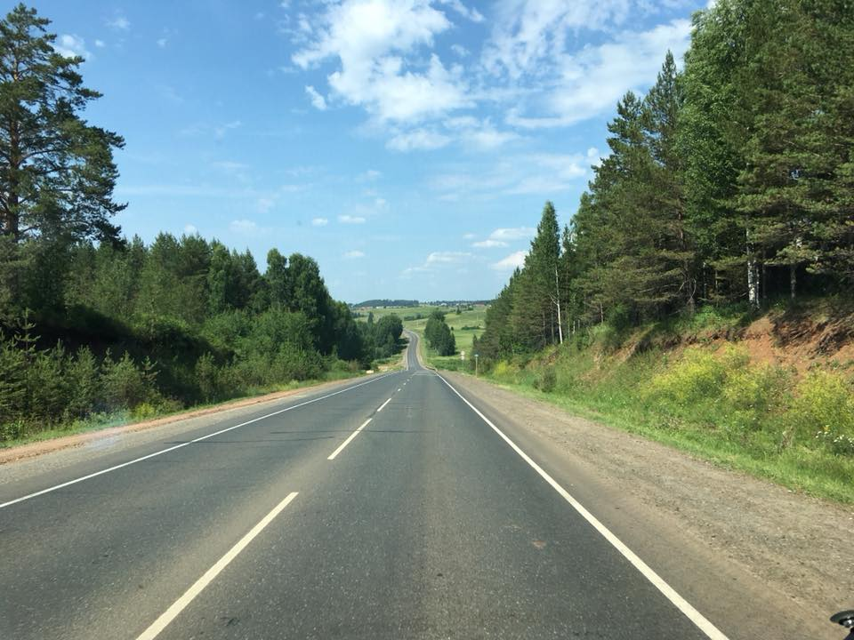

В автопутешествии есть один отрицательный момент, который может гарантированно испортить настроение путнику. Это встреча с сотрудником ГИБДД, особенно, если это оборотень в погонах.

Опыт автопутешествий у меня есть, поэтому я расскажу как минимизировать количество таких встреч. В эту поездку меня не останавливали ни разу.
Секрет второй, ваша машина не должна выделяться из потока. Выделяются машины тремя способами.
Марка. Когда мы ездили с Андреем и Наташей в Азербайджан, нас на Мурано останавливали чуть ли не на каждом посту. Машина встречается редко, и такова психология человека, что глаз за неё цепляется. Как сказал сотрудник на посту ДПС в Калмыкии «Как это вариатор? А можно его посмотреть?»🤦♂️ Андрея на Камри на стационарном посту не останавливали ни разу.
Наклейки. Их любят клеить путешественники, я клеил тоже. Как спросил сотрудник ГИБДД на посту в Дагестане (а это что за птица?) про логотип фонда «Счастье детям», на котором так и было написано «благотворительный фонд». Наклейки выдают в вас туриста. Который торопится. У которого можно немного повымогать. Как сказал сотрудник ГИБДД на посту в Кабардино-Балкарии «я мастер спорта по вымоганию денег». Так и сказал.
Багажник на крыше. Тут тоже всё ясно. Выдаёт туриста издалека. Если есть возможность не брать — не берите. Я ставил только в самую первую поездку. Потом отказались от всех вещей, что в нём возили. Это ещё и топливо экономит.
А теперь секрет первый, главный. Не нужно, ахаха, нарушать.
Тем, кто не выключил компьютер после такого секрета объясню. Нужно полностью исключить ЕДИНСТВЕННОЕ НАРУШЕНИЕ, за которым сегодня следят сотрудники ГИБДД — обгон в местах, где он запрещён. Прелесть этого нарушения для сотрудника в том, что такой обгон наказывается лишением прав. А значит из попавшегося пациента, тем более иногороднего, можно хоть верёвки вить. Справедливости ради стоит сказать, что нарушать правила обгона вообще не нужно. Остальные нарушения сегодня отданы на откуп частникам и вы узнаете о них из почтового ящика.